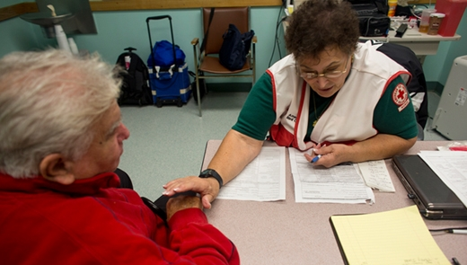

The Blood Donation Process
The blood donation process from the time you arrive until the time you leave takes about an hour. The donation itself is only about 8-10 minutes on average.
Registration

- We’ll sign you in and go over basic eligibility.
- You’ll be asked to show ID, such as your driver’s license.
- You’ll read some information about donating blood.
- We’ll ask you for your complete address. Your address needs to be complete (including PO Box, street/apartment number) and the place where you will receive your mail 8 weeks from donation.
HEALTH HISTORY

- You’ll answer a few questions about your health history and places you’ve traveled, during a private and confidential interview.
- You’ll tell us about any prescription and/or over the counter medications that may be in your system.
- We’ll check your temperature, pulse, blood pressure and hemoglobin level.
Your Donation

- If you’re donating whole blood, we’ll cleanse an area on your arm and insert a brand new sterile needle for the blood draw. (This feels like a quick pinch and is over in seconds.)
- Other types of donations, such as platelets, are made using an apheresis machine which will be connected to both arms.
- A whole blood donation takes about 8-10 minutes, during which you’ll be seated comfortably or lying down.
- When approximately a pint of whole blood has been collected, the donation is complete and a staff person will place a bandage on your arm.
Refreshment and Recovery

- After donating blood, you’ll have a snack and something to drink in the refreshment area.
- You’ll leave after 10-15 minutes and continue your normal routine.
- Enjoy the feeling of accomplishment knowing you are helping to save lives.
- Take a selfie, or simply share your good deed with friends. It may inspire them to become blood donors. Take a selfie, or simply share your good deed with friends. It may inspire them to become blood donors.